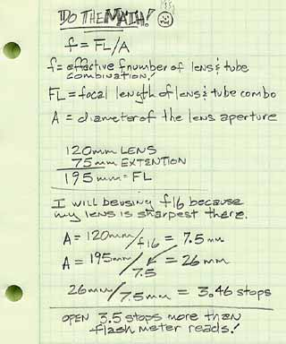

| If no navigation frame is visible to the left then, click here | |
How It's Done and Other Technical Stuff. |
|
| Before I started this endeavor, I had an inkling that a commercial flat bed scanner was not going to be up to the job. How I knew this was some simple math and some quick measurements with an optical comparator. The finest plate scratches that show themselves on a 1¢ Franklin measure about 0.0006 inches in thickness. Most high end flat bed scanners maximum optical resolution is about 2400 pixels per inch (ppi). So a pixel on the scanner measures 0.000416 inches. At this resolution, the scanner can provide me with almost 1 and a half pixels to define or render a plate scratch 0.0006 inches thick. Not enough pixels to really see what's really on the stamp, which is not very good for this kind of study. How To Make My Franklin's Huge. Add Water and They Will Grow. A coworker and photo restoration buff recommended I use negative film as opposed to slide film for exposure dynamic range. Common sense told me to purchase the finest grain film so the scanner won't see film grain dots and speckles. And my favorite camera store, Keeble and Schucat in Palo Alto, provided the extension tubes for the macro lens. The macro lens is a Mamiya APO 120 mm macro capable of focusing down to about 1 inch. There is 75 millimeters worth of extension tubes between the lens and the camera body which now makes the 120 mm focal length become about 195 mm. This makes for quite a heavy and long lens setup, but now gives me the ability to magnify the subject to almost 2.2 times it's original size. Bad Things Happen. Bad Things To Watch For. Part 1. What really happens is that the shop lights increase the room temperature by 5 degrees every 45 seconds. Think of the lights as 1000W space heaters that make light as a byproduct. Any object in the path of the light gets very hot. Stamps being in the center of all this photonic activity first start to curl. Then they turn brown. Then they catch on fire. The smoke and soot from the burning stamp will stain the front element of the macro lens. If it hasn't fallen off from the heat already. My recommendation is don't do this. Shop lights work better in the shop while changing the oil of your car. Bad Things To Watch For. Part 2. After shooting my first roll of film, I ran down to my favorite processing lab around the corner from my Santa Clara office. I handed my precious roll to the counter person and she said it would be ready in 2 hours. I arrived at the proper time and flopped the strip of film on to the light table. Most disappointing results. Murphy's Law strikes again. Most medium and large format cameras do not have through the lens light meters for calculating exposure. This is why we carry around handheld light meters. What "we"(1) failed to do was compensate for the light loss in the extension tubes. After crunching the numbers in my calculator, I found that all my images where underexposed by 3.5 stops. I should of known this but that's what R and D is all about. (1) Have you ever noticed that when doctors fail to fix or diagnose something they always say "Hmmmm ..... Looks like "WE" missed that on your tests." Bad Things To Watch For. Part 3. What is actually happening is that when the shutter is released, a mechanical lever in the camera closes or stops down the aperture iris located in the lens, to the proper position. It then swings the mirror for the viewfinder out of the way so that the shutter can open and expose the film. Because the macro lens is now mounted 3 inches from the camera on extension tubes, the lever mechanism that does all this work of moving the mirror out of the way and closing the iris, now has to work 3 times as hard to do the job. As you can see, it became the little lever that "couldn't". That is what the mirror lock up feature is for on most 35 mm SLR cameras. The same holds true for 2 1/4 medium format SLR's as well. "We" just failed to remember to use it. Good thing I am not a doctor. Finally, Some Success. The image to the right shows the actual negative size with the Franklin image now about 2.2 times it's normal size. The stamp in the center is the original size for reference. The Secret To High Resolution Revealed. Now a single pixel on the scanner appears to shrink from 0.000416 inches to 0.00018 inches. If you use this technique to scan your stamps and are lucky enough to own a scanner who's maximum optical resolution is 4800 ppi, then you could actually create computer graphic scanned images with over 10,000 ppi resolution. Really sshharrpppp. With All Good Things. Thats all I am gonna say about that. You get the picture, right?
I can be reached at: nerdman@ix.netcom.com Update 11/17/06 |
Figure 1. (above) The final camera setup after the high intensity photon induced fire.

|